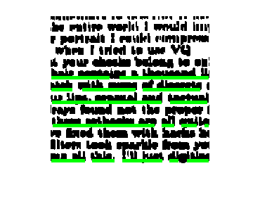
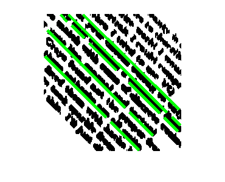
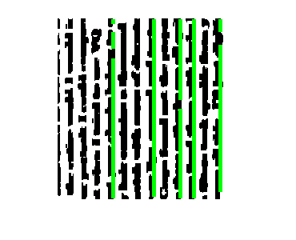
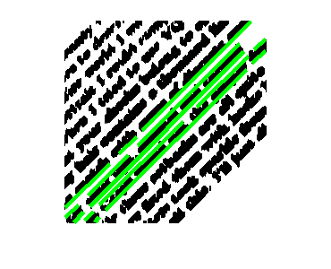

Contents
cd test-images-for-q2/ for i = 0:3
Preprocess Image
Step 1: Read the image, convert it to binary with proper thresholding.
im = imread(strcat('son3rot',int2str(i),'.png')); level = graythresh(im); im = im2bw(im,level); % Step 2: Crop the center portion as the side portions may be distorted % due to the rotation. im = imcrop(im,[150,150,225,225]); % Step 3: Erode the image with a line structuring element and then % apply canny to get the edge image. se = strel('line',5,90); im = imerode(im,se); im2 = edge(im,'canny');
Hough's Transform and Linguistic Properties
Step 4: Apply Hough's Transform on the edge image and get the lines. English text has a property that the bottom part is arranged in a line, we exploit that property.
[H,theta,rho] = hough(im2);
P = houghpeaks(H,5,'threshold',ceil(0.3*max(H(:))));
lines = houghlines(im2,theta,rho,P,'FillGap',10,'MinLength',5);
% Step 5: Calculate the angle and average it over all points.
angle=0;
for k = 1:length(lines)
xy = [lines(k).point1; lines(k).point2];
pangle = atan2(xy(2,1)-xy(1,1),xy(2,2)-xy(1,2))*180/pi;
if pangle < 0
pangle = pangle+180;
end
angle = angle + pangle;
end
angle = angle/length(lines);
angle = 90 - angle;
if angle < 0
angle = angle+180;
end
angle = 180 - angle;
disp(strcat('The angle in the text file no: ',int2str(i+1),' is ',int2str(angle)));
figure, imshow(im), hold on
max_len = 0;
% Step 6: Plot the results.
for k = 1:length(lines)
xy = [lines(k).point1; lines(k).point2];
plot(xy(:,1),xy(:,2),'LineWidth',4,'Color','green');
end
The angle in the text file no:1 is180
The angle in the text file no:2 is135
The angle in the text file no:3 is90
The angle in the text file no:4 is45
end cd ..